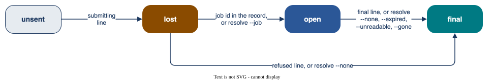

Live runs¶
Read this page before a live run. It says how a job is never sent twice, never cancelled, and always in a record.
The record¶
Each event is one JSON line, written, flushed and synced to disk (fsync, and F_FULLFSYNC on macOS)
before the next request (The records). A “submitting” line is on disk before the first request of a
job. Each step of a VLQ job (created, uploaded) is on disk before the next request. The job id is on disk
as soon as the answer is read.
Order |
In the record |
What the app does |
|---|---|---|
lost |
a “submitting” line, no job id: the request may have reached the site |
never sends it again; blocks a new run until you resolve it (below) |
open |
a job id, no result |
a resume collects it and never sends it again; blocks a new run on its site until then |
Never edit or move a record. The budget and the open-order check read every record where it is. A copy
in another place sends nothing: a resume that sends takes only the newest record of its run folder, from
the host, path, device and inode in its start line. Read a record with qdevices jobs RECORD or any JSON tool.
A resume never submits a VLQ job that has no “submitted” line. It reads the state of the job:
State at the site |
In the record |
Result |
|---|---|---|
past Configuring |
any |
collected |
cannot be read |
any |
the order stays open; exit code 1 |
Configuring |
the “created” line, no “uploaded” line |
SubmitJob was never sent: a final “not submitted” line, no device time |
Configuring |
the “uploaded” line (written just before SubmitJob), or no “created” line |
SubmitJob may have reached the site: the order stays open, nothing is cancelled or sent again; a stop |
The answer to a job request¶
For VLQ, a job request is any request of the metered job. Each site page says which answer is a refusal.
Answer |
Result |
|---|---|
a refusal: no job ran |
the order is final, with a “refused” line; the rule |
any other answer that is not a success: a redirect, 500 or more, a 4xx that is not a refusal at that site, no answer, no job id |
a job may exist: a stop |
a failure of the VLQ init job |
a stop |
No transport retry. A request that makes a job is never sent twice: a network loss inside it leaves a lost order.
In the wait, a failed read of the state or result (no answer, 500 or more, or the Piast-Q answer of too many connections) is a missed poll, asked again at the next poll until
wait_seconds. When the wait ends with no good answer, or an answer ends it at once, the call stops (status_errororresult_error). Its stop line holdsmissed: the kind of the last missed poll, ornullwhen an answer ended the wait at once. The order stays open, and a resume collects it later. A result that still cannot be read is made final withqdevices resolve RECORD ORDER --unreadable: after two calls 10 minutes or more apart when the answer could not be used, else after two calls 24 hours or more apart (Resolving an order, and a stale lock).The wait for a VLQ init job ends at the first failed read (a stop
prepare). The order stays unsent. A resume with--max-ordermakes a new init job.A line
RECORD WRITE FAILED (...): order N (NAME), job ID: ...orUnder way at the stop: ...gives the id of the job or init job under way. That id may not be in the record: write it down. Whenqdevices jobs RECORDshows the order as lost, give it withqdevices resolve RECORD ORDER --job ID.
Nothing is cancelled¶
The app has no cancel call. If you must, cancel a job at the site with its own tools. Then, if the record shows the order as lost, record what became of it with
qdevices resolve(below).Ctrl-C, SIGTERM, SIGHUP and a wait time-out end the call with a “stop” line. The job runs on at the site. Collect it with
qdevices send MANIFEST --live --resume RECORD. After an interrupt the call prints that command andUnder way at the stop: order N (NAME), job ID.An error of the program (exit code 3) prints that line too.A signal set to ignore stays ignored, so
nohupworks. The screen never ends a live call: a closed pipe or terminal is passed over.Keep the machine awake (
caffeinate -ion macOS). A sleep inside a request leaves a lost order.
One live call per site, from one host¶
send, check --live, resolve and unlock take the site lock, ~/.local/state/qdevices/<site>.lock.
A second live call on the site from this host is refused while the first runs: wait for it to end.
sendtakes the lock before it reads any record.resolvereads the record to learn its site (for a record of another runner, the site whoseolder_recordsread it), takes the lock, reads it again and decides under the lock.The lock is an exclusive
flockand a holder file<site>.holder(host name, pid, start time), as a cluster file system can grant aflockon each node with no error. A holder of another host refuses the call: check that host, then giveqdevices unlock SITE --host NAME. A holder of this host whose process has ended is cleared. With noflockor no holder file, the call is refused: use a host whose home folder hasflock.Drive one site from one host. A laptop and a login node have different home folders and do not see each other’s lock or records. A resume that sends is refused on another host than the one that started the record. A resume without
--max-orderstill collects there.The lock covers this app only: no other tool may send to the site during a live call. Records of another runner count in the budget and the open-order check only when listed in
older_records(Configuration).Keep the clock of the host synchronised (NTP). The records, job times and time rules read it.
Resolving an order, and a stale lock¶
qdevices resolve RECORD ORDER OPTION records your decision on one order, offline, in one synced line.
Find the order with qdevices jobs RECORD. In a record of this app it takes these cases, and refuses any
other:
Order |
Give |
When |
Then |
|---|---|---|---|
lost |
|
you found the job in the job list of the site (Piast-Q has none: ask PCSS, Piast-Q (PCSS)) |
a resume collects it |
lost |
|
the job list shows no job |
final, with no job |
open VLQ, last stop |
|
the site shows that the job never ran |
final, with no job |
open or lost, with a job id that no URL can hold (a newline in it) |
|
no read of its state can name the job |
with |
open, shown only as |
|
every status line with a state says |
counts at |
open, last stop |
|
two calls 10 minutes or more apart got that answer |
final, counts at |
open, last stop |
|
two calls 10 minutes or more apart got an answer that could not be used, or two calls 24 hours or more apart got that stop (below) |
final, counts at |
final, the result has more seconds than |
|
the time is a wait at the site, cause not known, not the run of the job |
counts at |

For --unreadable, an answer that could not be used is a result_error stop with missed null and no
http_status of 300 or more. Any other result_error stop got no usable answer: missed polls up to
wait_seconds, a redirect or an HTTP error of 400 or more, or a stop line of qdevices before 0.2.0, which
has no missed. The stop says how far apart the two calls must be, and names the command. A record with an
--unreadable decision needs qdevices 0.2.0 or later; an older app reads the order as open and refuses new
sends of that site.
The app never sends a resolved order again, and never cancels the job at the site. For an open order that
resolve does not take, ask the site (each site page gives its support), and resume once the job is final.
A record of another runner is never written. That is a record whose first start line this app did not write, and which is not in the records folder of the app.
resolvetakes it only when its first line is a start line (settle any other with its runner), and the app reads it for its own site: list it, or its folder, inolder_recordsof that site, or of one site only when its site cannot be told (Configuration). Else the decision has no effect.The decision goes to
older_decisions.jsonlof that site, in one synced line under its lock (Manifests and records). It holds only while the order is as it was decided on: a job id, new job or result that the other runner writes later stands. A send reads only the decisions of its own site.It takes
--nonefor a lost order (final, with no job),--gonefor an open order whose job the site no longer gives (final, counts atjob_seconds_limit), and--over-limitas above.It refuses
--job,--expiredand--unreadable: the app does not collect such a record, so collect it with its runner.--goneon a record of this app is refused: there,--expiredtakes such an order.
Tokens¶
The token is read once from one environment variable (
MQSS_TOKEN,LEXIS_TOKEN,PCSS_API_KEY). The variable is then deleted from the process environment, before a rules file is imported (Rules).The app reads no token file, and never stores or prints a token.
Never type the token on the command line. Use
set +x; export NAME="$(cat FILE)": then it is not in your shell history or a trace.The token goes only to the fixed addresses of the site, with no redirect. No flag and no environment variable moves them.
A filter cleans every record line, error, downloaded log and traceback. It takes out the token and the VLQ envelope passwords of the call (each password raw and in base64), each whole, in JSON form and by every start and every end of 8 characters or more; any text in the form of a JWT; the value of
USER_JWT_PWD(the envelope password in the environment of a VLQ job) in any form; and Fernet text and its base64 form.
Budget and rules¶
The generic rules check the shots, the budget and more before each job, and the result after it
(Rules). The budget counts a lost or open order at job_seconds_limit, so the sum is an upper bound
(Billing and usage).